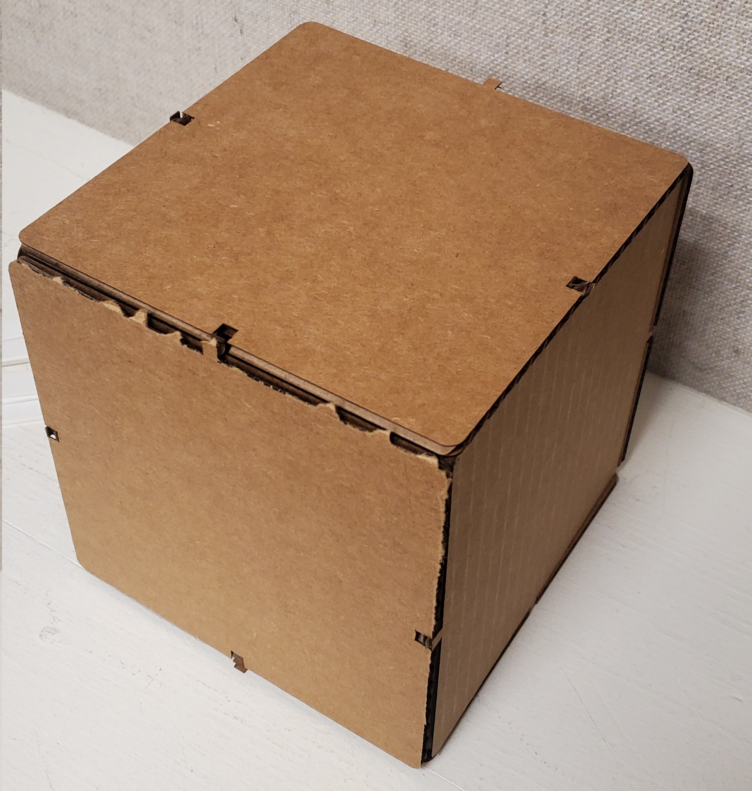

My laser-cutting project for Week 2 was a Dice Block. I made 6 faces that were supposed to connect to each other as if they were puzzle pieces.
I initially thought that six of these filleted bodies would be enough, but after laser cutting one of them, I realized that some of them needed extensions to the square so that other pieces would connect. For the most part, they were 11-cm squares that had relatively small rectangles cut out from each side's midpoint. Getting the constraints to set this all up was a nightmare. I'm thankful for the Mirror and Colinear tools. I drew a lot of sketches to envision how to set up the next model:
Drawing a 3D object on a 2D paper was tricky; I had a specific configuration of squares in mind that would (in theory) fit in a specific way. Thus, I settled with faces 1 and 6 having 2 extensions on their sides, and the other faces having one extension and three indents. These were the results:
I designated "main" as the sides with the numbers 2, 3, 4, and 5. Likewise, I designated "alt" as the other two sides. The "main" model is on the top left, while the "alt" one is on the top right. When cutting the "alt" sides, I didn't realize that the separate sketches for the numbers prserved their bounding boxes, and I misaligned the text and the "alt" cutouts. Since those models had an extension to the middle left, the laser cutter's origin started with that extension, while for the text boxes, the origin was the top-left corner of the "1" text box. I also found out the hard way that the extensions and the indents needed to be rectangles that had dimensions of the cardboard (which varied significantly depending on which sheet I was using in the laser cutter) minus a multiple of the kerf (about 0.3 mm). I thought a 2-cm extension gave the dice blocks enough wiggle room and flexibility to connect together, but the end result was not necessarily a perfect cube. I had to spend about two hours redoing the model from scratch because bodies and projected sketches don't retain all user-set parameters. I made another page of sketches;
The main difference of this sketch set is that each "alt" side needed 4 extensions, which was enough to construct the dice block properly...or so I thought.
It did not work as intended. I was unable to reliably connect all 6 pieces together. I think I miscalculated when accounting for the cardboard's kerf. Also, I might have needed to make a few faces a little wider to account for the extensions and how the pieces fit into them. The end result was close to a success. It is highly unstable, but I was able to configure it all together. Some of the extensions and indents didn't line up.

Click here to download the Fusion 360 project. It contains all of my major bodies and sketches, including the final ones.
Click here and here for the .dxf files of the final sketches. Each sketch will only have 1 object, but I laser-cut multiple copies of each.